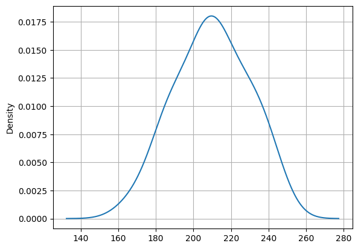

import pandas as pd
import quantecon as qe
import warnings
warnings.filterwarnings('ignore')OMP: Info #276: omp_set_nested routine deprecated, please use omp_set_max_active_levels instead.OMP: Info #276: omp_set_nested routine deprecated, please use omp_set_max_active_levels instead.scores = list()
models = list()
bic = list()
np.random.seed(10)
for n_components in comp_range:
for idx in range(10):
# define our hidden Markov model
model = hmm.GaussianHMM(n_components=n_components,
covariance_type='full',
random_state=np.random.randint(10,500))
model.fit(X) # 50/50
models.append(model)
scores.append(model.score(X))
bic.append(model.bic(X))
print(f'Converged: {model.monitor_.converged}'
f'\tScore: {scores[-1]}')
# get the best model
model = models[np.argmin(bic)]
n_states = model.n_components
print(f'The best model had a score of {max(scores)} and {n_states} '
'states')
# use the Viterbi algorithm to predict the most likely sequence of states
# given the model
states = model.predict(X)Converged: True Score: -193.01424017511735
Converged: True Score: -173.4905746732474
Converged: True Score: -173.50308099381377
Converged: True Score: -173.4440605514749
Converged: True Score: -193.00533548374705
Converged: True Score: -173.2950245063382
Converged: True Score: -192.69477463018066
Converged: True Score: -173.49555242391432
Converged: True Score: -193.02331693449096
Converged: True Score: -173.29226497857934
Converged: True Score: -165.47664941343598
Converged: True Score: -178.86754302496482
Converged: True Score: -166.65183108643694
Converged: True Score: -165.4549050271745
Converged: True Score: -171.8040837555721
Converged: True Score: -167.82937741455203
Converged: True Score: -177.08936192571053
Converged: True Score: -169.99930610147587
Converged: True Score: -173.16803000558758
Converged: True Score: -165.29478475018215
The best model had a score of -165.29478475018215 and 2 statesdflearn.groupby("cluster").agg( size = pd.NamedAgg(column="cluster", aggfunc="size"),\
min_price = pd.NamedAgg(column="cents_per_lb", aggfunc="min"),\
max_price = pd.NamedAgg(column="cents_per_lb", aggfunc="max"),\
mean_price = pd.NamedAgg(column="cents_per_lb", aggfunc="mean"),\
std_dev_price = pd.NamedAgg(column="cents_per_lb", aggfunc="std")).round(2)| size | min_price | max_price | mean_price | std_dev_price | |
|---|---|---|---|---|---|
| cluster | |||||
| 0 | 27 | 168.65 | 241.07 | 209.79 | 19.25 |
| 1 | 13 | 248.40 | 279.83 | 264.17 | 8.50 |
